NYC Parks Drinking Fountains NYC Parks Drinking Fountains NYC Parks Drinking Fountains NYC Parks Drinking Fountains NYC Parks Drinking Fountains NYC Parks Drinking Fountains NYC Parks Drinking Fountains NYC Parks Drinking Fountains NYC Parks Drinking Fountains NYC Parks Drinking Fountains NYC Parks Drinking Fountains NYC Parks Drinking Fountains NYC Parks Drinking Fountains NYC Parks Drinking Fountains NYC Parks Drinking Fountains NYC Parks Drinking Fountains NYC Parks Drinking Fountains NYC Parks Drinking Fountains NYC Parks Drinking Fountains NYC Parks Drinking Fountains NYC Parks Drinking Fountains NYC Parks Drinking Fountains NYC Parks Drinking Fountains NYC Parks Drinking Fountains NYC Parks Drinking Fountains NYC Parks Drinking Fountains NYC Parks Drinking Fountains NYC Parks Drinking Fountains NYC Parks Drinking Fountains NYC Parks Drinking Fountains